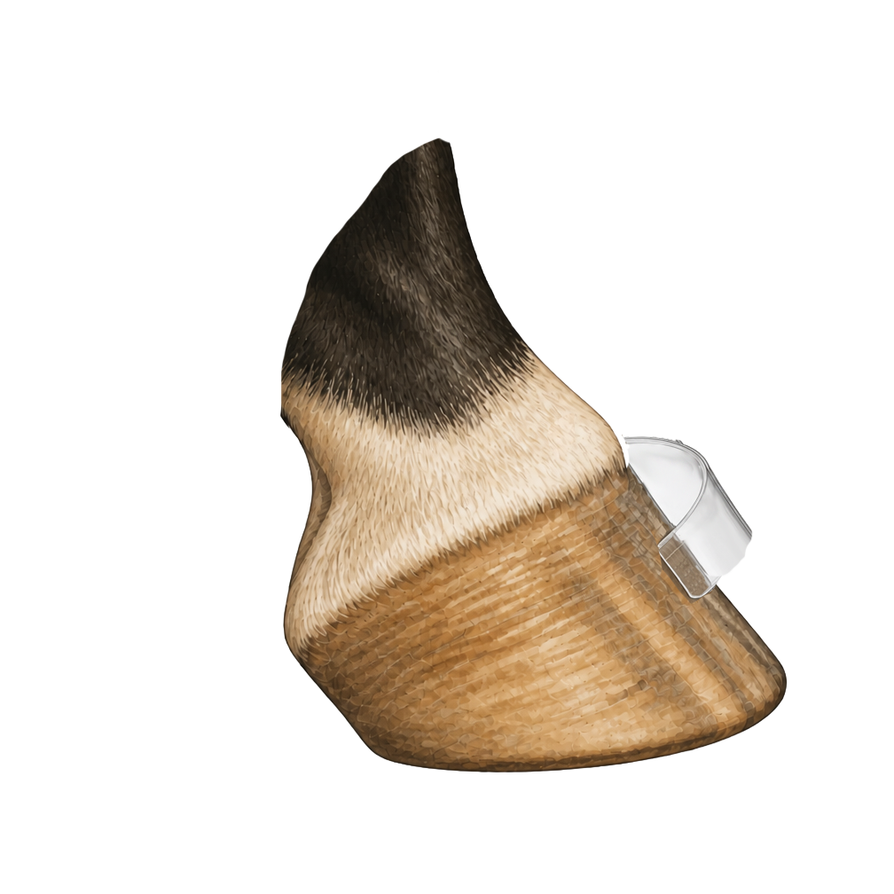
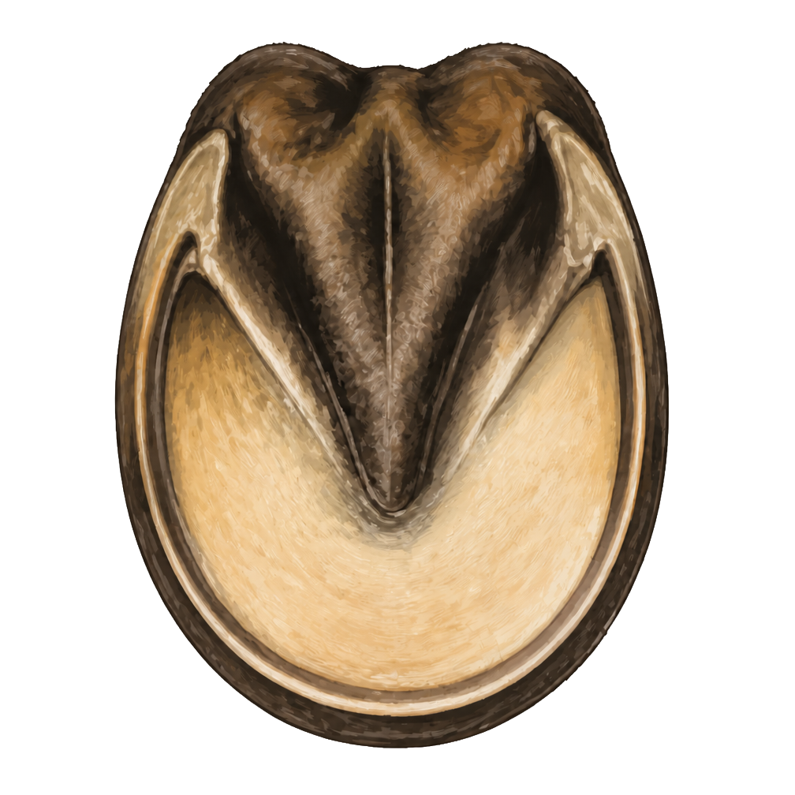

Two Views of One Hoof
Hoof anatomy is easier when it is divided into views. Start with the structures visible from the outside, including the periople near the hairline, then study the structures visible when the hoof is picked up. The bones and tissues protected inside the hoof capsule are covered in the next course.
💡 Did You Know
The frog — the V-shaped structure on the bottom of the hoof — acts as a natural pump. When the horse puts weight on the foot, the frog compresses and helps push blood back up the leg, providing circulation to an area of the body that has no muscles to help with blood flow. This is one reason standing horses still in stalls for long periods can develop circulation problems.
Outer Hoof View

Periople Coronet Hoof Wall Toe Heel Heel BulbThe outside of the hoof is often where beginners first notice changes: chips, cracks, long toes, flares, or rings in the wall. The coronet, or coronary band, is especially important because new hoof wall grows downward from that area.
This side view shows the periople — the smooth, slightly shiny band just above the hoof wall, where hair gives way to hoof. It runs all the way around the top of the hoof, blending into the coronet below it.
Outer Structures
Periople
The periople is the band of soft, rubbery tissue just above the hoof wall, where hair meets hoof. It produces a thin, protective coating over the new hoof wall as it grows down from the coronet.
Hoof Wall
The hard outer covering of the hoof. It grows downward from the coronet and helps bear the horse's weight around the outside edge of the foot.
Coronet / Coronary Band
The band where skin and hoof meet. This is where hoof wall growth begins, so injuries here can affect future hoof growth.
Toe
The front of the hoof wall. A balanced toe helps the foot break over smoothly as the horse moves.
Quarters
The side portions of the hoof wall between the toe and heel. Quarter cracks are named for this area.
Heels
The back portions of the hoof wall. The heels help support the rear of the hoof and should be kept balanced.
Heel Bulbs
The rounded soft areas at the back of the hoof above the heels. They are visible from behind and help cushion the back of the foot.
Underneath Hoof View
When cleaning a hoof, avoid digging aggressively into soft tissue. Pick out packed dirt and stones from the grooves beside the frog, then brush away loose debris so the sole, frog, bars, and white line can be seen clearly.

This underside view shows the heart-shaped frog at the center, the pale sole surrounding it, and the white line marking where the wall meets the sole.
Underneath Structures
Sole
The bottom surface that protects the inner foot. A healthy sole is usually slightly concave rather than flat.
Frog
The V-shaped, rubbery structure in the center of the hoof. It helps with traction, shock absorption, and circulation as the horse moves.
White Line
The pale line where the hoof wall and sole meet on the bottom of the foot. It is an important landmark for farrier work.
Collateral Grooves
The grooves on each side of the frog. Dirt, manure, stones, and bedding often pack into these areas.
Central Sulcus
The groove down the center of the frog. It should be checked gently during hoof cleaning.
Bars
Inward folds of the hoof wall near the heels. They add support to the back of the hoof.